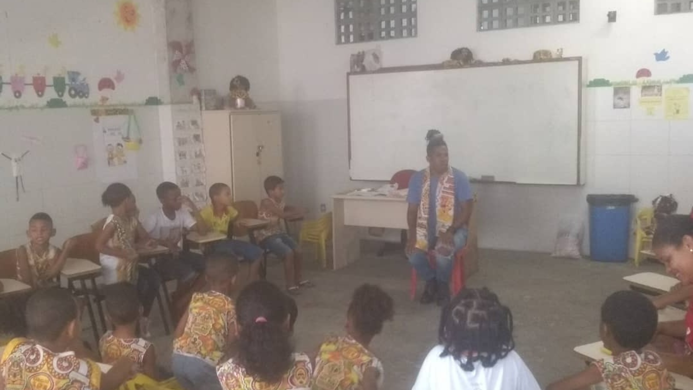
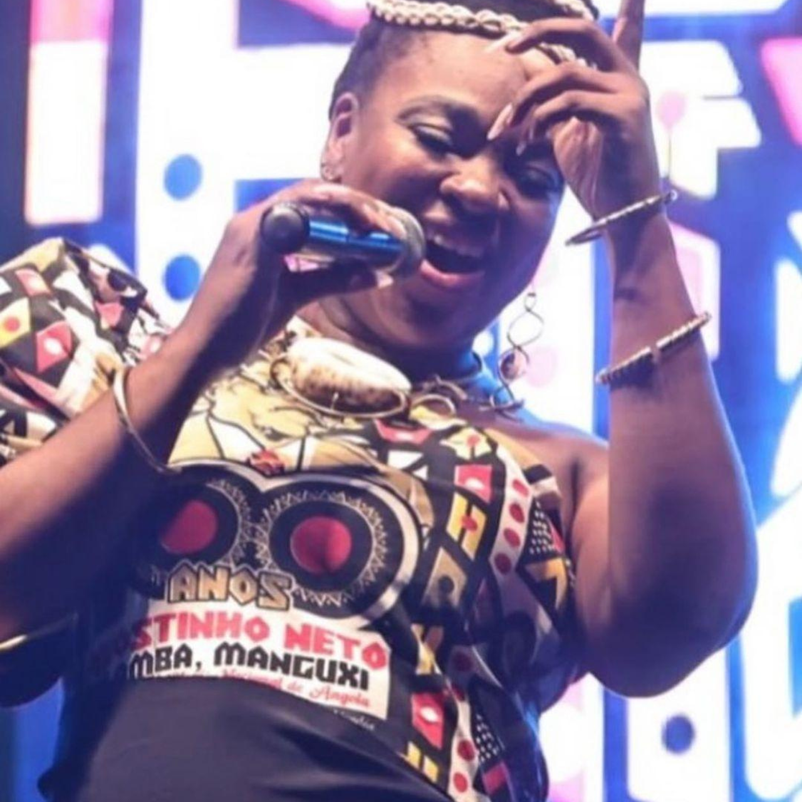
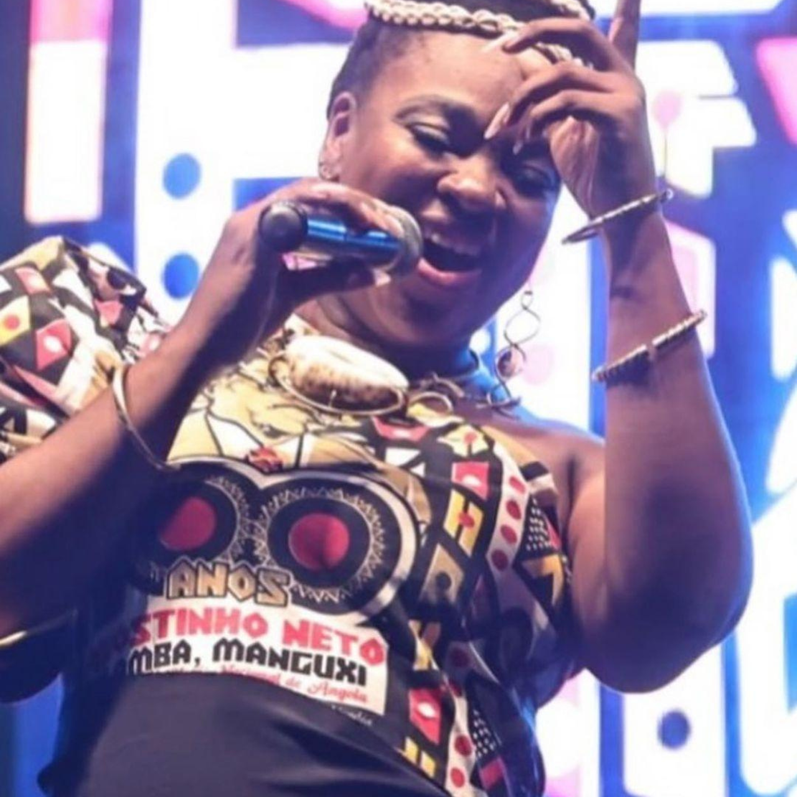

Referência de música e dança afro, Ilê Aiyê transforma vida de jovens
O bloco promove atividades que incentivam a valorização da identidade negra, com um papel fundamental na comunidade do Curuzu.
Foto: Mayara Câmara
Vidas são transformadas através de Projetos socioeducativos desenvolvidos pelo primeiro bloco afro Ilê Aiyê. Com ações que vão além do desfile no carnaval de Salvador, desempenhando um papel fundamental da valorização da identidade negra, na comunidade do Curuzu.
Com o objetivo de transmitir para a comunidade valores de cidadania e suporte para que desenvolva uma leitura crítica sobre a sociedade, sobre a construção de sua identidade étnica e reconhecimento dos valores Ancestrais. O Ilê Aiyê criou no início dos anos 90, o Projeto de Extensão Pedagógica (PEP).
Foto Arquivo Pessoal (Iana Marucha)
Foto: Luiza Nascimento
A iniciativa se destacou através da Escola de Percussão e dança Banda Erê com um conjunto de atividades educativas de caráter multidisciplinar que proporciona para crianças e jovens de 6 a 17 anos a oportunidade de compreender e valorizar a diversidade cultural por meio de aulas de percussão, dança afro, capoeira, história da cultura afro-brasileira, educação para a cidadania e de projetos que incentivam valorização da identidade negra, desempenhando um papel fundamental na comunidade.
Ao entrar na escola o aluno passar por um período de acolhimento e participa de todas as atividades proporcionadas na instituição.

Foto: Luiza Nascimento
Os jovens têm diversas oportunidades como viagens, congressos, reconhecimento, além do acesso aos artistas durante as apresentações da banda. Porém, para se manter o empenho no colégio é primordial. Notas e comportamento são rotineiramente avaliados.
Aos 17 anos, os jovens que mais se destacaram passam a integrar a banda oficial do Ilê Aiyê, como no caso de Iana Marucha e Maicon Ítalo que fizeram parte dos projetos e atualmente são integrantes do bloco, mostrando para os mais jovens que é possível ter sonhos. Hoje, a dupla é referência para outros jovens que buscam alcançar o mesmo patamar.
Foto Arquivo Pessoal (Iana Marucha e Maicon Ítalo em apresentações do Ilê)
O Babalorixá e bailarino do Ilê, Maicon Ítalo, 36 anos, foi aluno da Banda Erê falou que através do bloco, ele entendeu que a cor de sua pele não determina o local que ele deve estar, e que não é impossível acreditar. Mesmo sendo uma criança preta periférica.
“Eu não sei oque seria de mim sem a oportunidade que o Ilê Aiyê me deu, através das ações realizadas pelos projetos eu me encontrei na dança e como pessoa, conheci lugares e pessoas incríveis me ajudaram a seguir em frente para realizar o meu sonho, assim como minha mãe, que sempre esteve ao meu lado”, disse.
Maicon também abriu os seus arquivos e lembrou de sua participação em um reality show realizado pelo canal Futura quando era adolescente.
Foto: Elizane Souza
"Tudo que eu tenho hoje é graças à instituição que me preparou para que pudesse me defender e identificar o preconceito com a minha cor e sempre segui em busca dos meus objetivos,” concluiu.
Foto: Elizane Souza
Para ex-aluna da Banda Erê, hoje pedagoga e cantora do Ilê Aiyê, Iana Marucha, 37 anos, as ações desenvolvidas para as crianças na comunidade são de suma importância para a formação de um futuro melhor e de forma coletiva.
“Quando entrei na banda Erê, eu tinha seis anos, onde fiz parte de diversas atividades, mas um dia a professora de canto coral me pediu para cantar uma música, mesmo tímida cantei e estou até hoje,” relembrou Iana.
Além de cantora do bloco, Iana é Fisioterapeuta, idealizadora e coordenadora do projeto @prasisaude de assistência à saúde da pessoa idosa, desenvolvido no bairro do Curuzu, e professora social da Escola Mãe Hilda.
Foto de Arquivo Pessoal (Iana Marucha)
“O Ilê é, e sempre será, um movimento que revolucionou a maneira de viver e sobreviver em uma sociedade racista. Os projetos ali desenvolvidos são uma forma de preparação para os jovens saberem que é difícil, não impossível”, concluiu.
A banda Erê desfila no domingo de carnaval, no circuito Curuzu / Liberdade, onde os jovens são acompanhados pelos responsáveis. O grupo juvenil também participa de shows e apresentações, onde o cachê é convertido em investimentos para sustentar a Escola e os projetos do bloco.
Outras atividades
O Ilê Aiyê também tem uma outra ação de suma importância para a comunidade que é a Escola Mãe Hilda, criada em 1988, com o objetivo de garantir o direito básico à educação das crianças do bairro, através de uma alfabetização de qualidade. Iniciada dentro do terreiro Ilê Axé de Jitolú sem nenhum fim lucrativo, com aulas do 1º ao 4º ano ministradas por professoras voluntárias.
Foto: Arquivo Ilê Aiyê
Mas em 2004, a Escola saiu do terreiro e foi para a atual sede do bloco, onde possuía uma estrutura maior para comportar os alunos até o 5º, se tornando uma das escolas principais do bairro do Curuzu. Com a pandemia, em 2020, as atividades na instituição foram encerradas e com previsão para retorno em 2024 por meio de parceria da prefeitura de Salvador.
Foto de Arquivo Pessoal (Iana Marucha)
O bloco também promove, durante o ano, ações que dão visibilidade nacional e internacional para a cultura negra como os ensaios do ilê, que acontecem a partir do mês de julho, a Semana da Mãe Preta, o Novembro Azeviche e a Noite da Beleza Negra, com escolha da Deusa do Ébano.
Foto Ilustrativa: Arquivo da Internet
Além de cursos extras de capacitação profissional realizados em parceria com outras instituições. As atividades transformam a vida de jovens e adultos da comunidade e possibilitam a inserção no mercado de trabalho.
Foto: Arquivo Ilê Aiyê
Uma história de Luta contra o racismo e resistência
Criado em novembro de 1974, no bairro do Curuzu, diante de uma Ditadura Militar, onde existia uma única ideia de cultura nacional que possuía uma aversão explicita sobre qualquer manifestação cultural, estética ou política ligada ao afro-brasileiro. O Ilê Aiyê realizou o primeiro desfile no verão de 1975, com uma proposta diferente dos tradicionais blocos da cidade, elevando os elementos da cultura africana em suas músicas, danças e indumentárias, além de ressaltar a beleza e a riqueza da ancestralidade africana.
Arquivo pessoal (Maicon Ítalo)
Apesar das críticas sofridas, o bloco conquistou o reconhecimento e o respeito de toda a sociedade baiana e se tornou um símbolo de orgulho e resistência para a população, uma das mais importantes organizações culturais afro-brasileiras, com papel significativo na preservação e promoção da cultura afrodescendente em Salvador e no Brasil.
Texto: Elizane Souza


 
